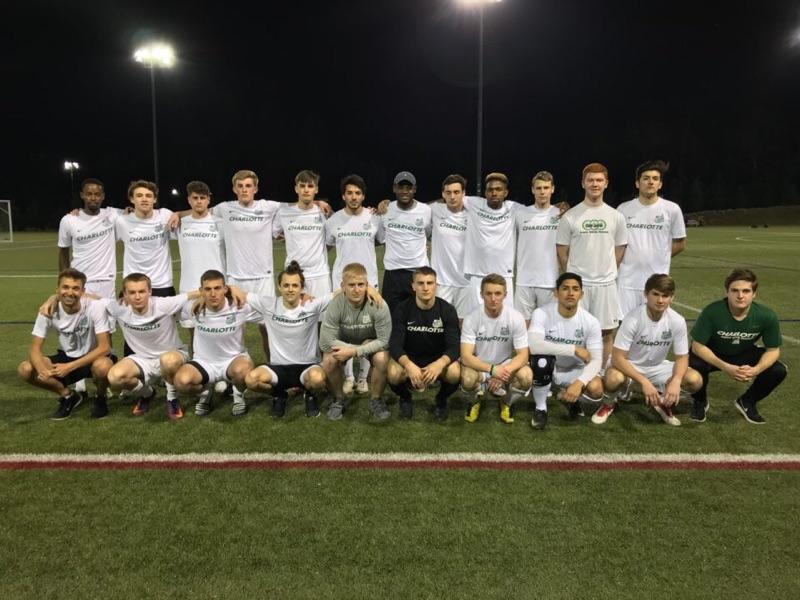

About the Team

The Charlotte Men's Soccer Club is a competitive club level similar to the elite youth
travel teams or a junior college / JV college program. We compete in a national conference
each fall during our main season. We highly encourage all players to come try out.